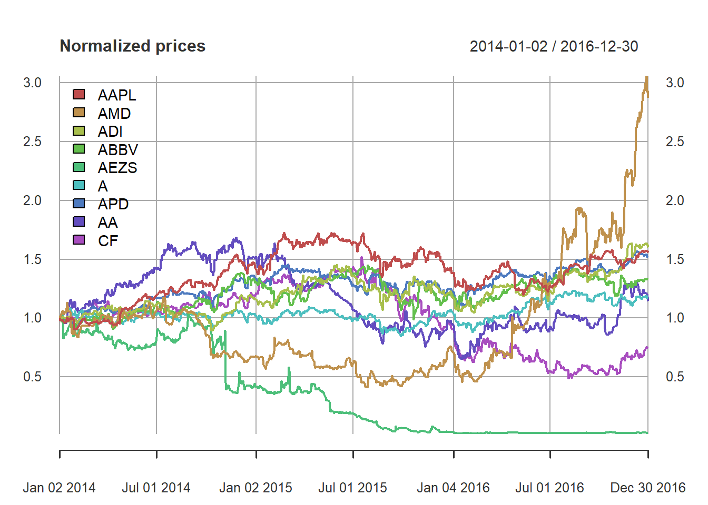
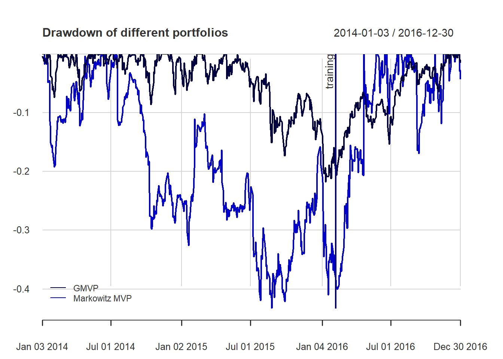
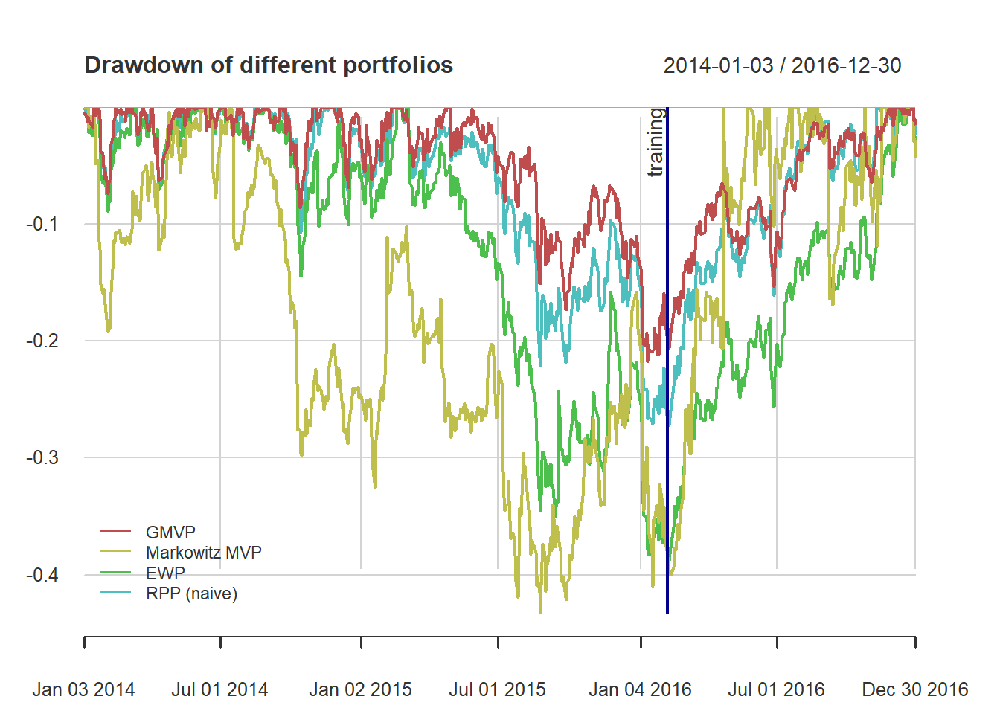
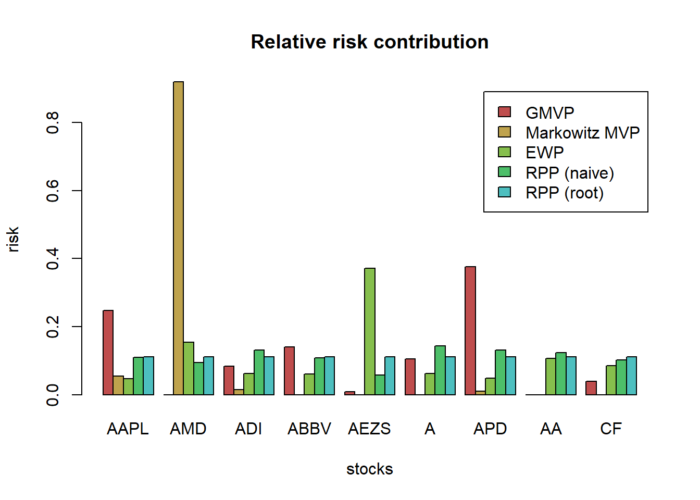
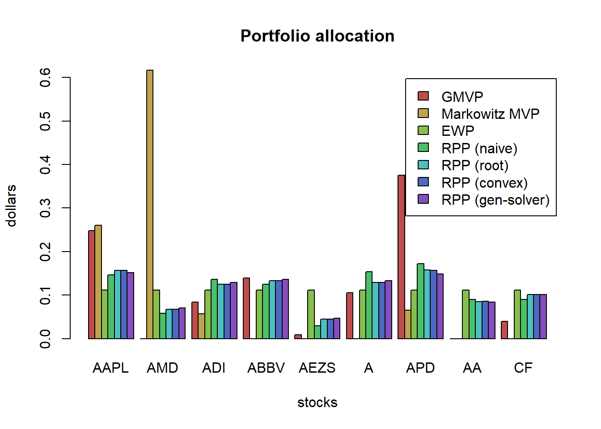

Chapter 8 Risk parity portfolio
8.1 Motivation
Since the global financial crisis in 2008, risk management has particularly become more important than performance management in portfolio optimization.
This chapter is for improvement of the last issue of Markowitz’s portfolio: it only considers the risk of the portfolio as a whole and ignores the risk diversification (i.e., concentrates risk too much in few assets, this was observed in the 2008 financial crisis): solution is the risk parity portfolio.
The alternative risk parity portfolio design has been receiving significant attention from both the theoretical and practical sides because it
- diversifies the risk, instead of the capital, among the assets
- is less sensitive to parameter estimation errors.
Today, pension funds and institutional investors are using this approach in the development of smart indexing and the redefinition of long-term investment policies.
The risk parity approach asserts that when asset allocations are adjusted to the same risk level, the portfolio can achieve a higher Sharpe ratio and can be more resistant to market downturns.
Facts: Lack of diversification of Markowitz portfolio
from = "2014-01-01"
to = "2016-12-31"
tickers <- c("AAPL", "AMD", "ADI", "ABBV", "AEZS", "A", "APD", "AA","CF")
prices <- get_data(tickers, from, to)
N <- ncol(prices)
T <- nrow(prices)
T_trn <- round(T*0.7)
X <- diff(log(prices)) %>% na.omit()
temp <- get_return_and_split(ratio=0.7, prices=prices)
X_log_trn <- temp$log_trn
X_log_tst <- temp$log_tst
X_lin_trn <- temp$lin_trn
X_lin_tst <- temp$lin_tst
X_lin <- temp$X_lin
X_log <- temp$X_log
mu <- colMeans(X)
Sigma <- cov(X)
plot(prices/rep(prices[1, ], each = nrow(prices)), col = rainbow10equal, legend.loc = "topleft",main = "Normalized prices")
# define portfolio formulations
portolioMarkowitz <- function(mu, Sigma, lmd = 0.5) {
w <- Variable(nrow(Sigma))
prob <- Problem(Maximize(t(mu) %*% w - lmd*quad_form(w, Sigma)),
constraints = list(w >= 0, sum(w) == 1))
result <- solve(prob)
return(as.vector(result$getValue(w)))
}
portolioGMVP <- function(Sigma) {
w <- Variable(nrow(Sigma))
prob <- Problem(Minimize(quad_form(w, Sigma)),
constraints = list(w >= 0, sum(w) == 1))
result <- solve(prob)
return(as.vector(result$getValue(w)))
}
# compute portfolios
w_Markowitz <- portolioMarkowitz(mu, Sigma)
w_GMVP <- portolioGMVP(Sigma)# put together all portfolios
w_all <- cbind(w_GMVP, w_Markowitz)
rownames(w_all) <- colnames(X_lin)
colnames(w_all) <- c("GMVP", "Markowitz MVP")
# plot
barplot(t(w_all), col = rainbow8equal[1:2],
main = "Portfolio allocation", xlab = "stocks", ylab = "dollars", beside = TRUE,
legend = colnames(w_all)) #args.legend = list(x = "topleft", inset = 0.04)
# compute returns of all portfolios
ret_all <- xts(X_lin %*% w_all, index(X_lin))
ret_all_trn <- ret_all[1:T_trn, ]
ret_all_tst <- ret_all[-c(1:T_trn), ]
# performance in-sample
t(table.AnnualizedReturns(ret_all_trn))
#> Annualized Return Annualized Std Dev Annualized Sharpe (Rf=0%)
#> GMVP 0.0724 0.1774 0.4084
#> Markowitz MVP -0.1342 0.3500 -0.3834
# performance out-of-sample
t(table.AnnualizedReturns(ret_all_tst))
#> Annualized Return Annualized Std Dev Annualized Sharpe (Rf=0%)
#> GMVP 0.3003 0.1420 2.1140
#> Markowitz MVP 3.0480 0.5314 5.7361
{ chart.CumReturns(ret_all, main = "Performance of different portfolios",
wealth.index = TRUE, legend.loc = "topleft", colorset = rich8equal)
addEventLines(xts("training", index(X_lin[T_trn])), srt=90, pos=2, lwd = 2, col = "darkblue") }
{ chart.Drawdown(ret_all, main = "Drawdown of different portfolios",
legend.loc = "bottomleft", colorset = rich8equal)
addEventLines(xts("training", index(X_lin[T_trn])), srt=90, pos=2, lwd = 2, col = "darkblue") }
8.2 Formulation
marginal risk contribution (MRC):
\[{\sf MRC}_i = \frac{\partial \sigma}{\partial w_i} = \frac{\left(\boldsymbol{\Sigma}\mathbf{w}\right)_i}{\sqrt{\mathbf{w}^{T}\boldsymbol{\Sigma}\mathbf{w}}}\] MRC can be defined based on other risk measures, like VaR and CVaR.
risk contribution (RC):
\[{\sf RC}_i = w_i\frac{\partial\sigma}{\partial w_i}=\frac{w_i\left(\boldsymbol{\Sigma}\mathbf{w}\right)_i}{\sqrt{\mathbf{w}^{T}\boldsymbol{\Sigma}\mathbf{w}}}\]
relative risk contribution (RRC):
\[{\sf RRC}_i = \frac{{\sf RC}_i}{\sigma(\mathbf{w})} = \frac{w_i\left(\boldsymbol{\Sigma}\mathbf{w}\right)_i}{\mathbf{w}^{T}\boldsymbol{\Sigma}\mathbf{w}}\]
note that \(\sum_{i=1}^N {\sf RRC}_i = 1\)
8.3 Risk budgeting portfolio (RBP)
Risk budgeting portfolio (RBP) allocates the risk according to the risk profile determined by the weights \(\mathbf{b}\)
\[{\sf RC}_i = b_i \sigma(\mathbf{w})\]
We can rewrite
\[w_i\left(\boldsymbol{\Sigma}\mathbf{w}\right)_i = b_i \mathbf{w}^{T}\boldsymbol{\Sigma}\mathbf{w}, \qquad i=1,\ldots,N.\]
8.3.1 Naive risk budgeting portfolio
assuming a diagonal covariance matrix
8.3.2 Inverse volatility portfolio
# compute EWP
w_EWP <- rep(1/N, N)
# compute naive RPP
sigma2 <- diag(Sigma)
w_RPP_naive <- 1/sqrt(sigma2)
w_RPP_naive <- w_RPP_naive/sum(w_RPP_naive)
# add portfolios to the two previous ones
w_all <- cbind(w_all,
"EWP" = w_EWP,
"RPP (naive)" = w_RPP_naive)
# plot
barplot(t(w_all), col = rainbow8equal[1:4],
main = "Portfolio allocation", xlab = "stocks", ylab = "dollars", beside = TRUE,
legend = colnames(w_all))
Let’s plot the risk contribution:
# compute risk contributions
risk_all <- cbind("GMVP" = as.vector(w_GMVP * (Sigma %*% w_GMVP)),
"Markowitz MVP" = as.vector(w_Markowitz * (Sigma %*% w_Markowitz)),
"EWP" = as.vector(w_EWP * (Sigma %*% w_EWP)),
"RPP (naive)" = as.vector(w_RPP_naive * (Sigma %*% w_RPP_naive)))
rownames(risk_all) <- colnames(X_lin)
RRC_all <- sweep(risk_all, MARGIN = 2, STATS = colSums(risk_all), FUN = "/") # normalize each column
# plot
barplot(t(RRC_all), col = rainbow8equal[1:4],
main = "Relative risk contribution", xlab = "stocks", ylab = "risk", beside = TRUE, legend = colnames(RRC_all))
8.3.3 PnL comparison
# compute returns of all portfolios
ret_all <- xts(X_lin %*% w_all[, c("GMVP", "Markowitz MVP", "EWP", "RPP (naive)")],
order.by = index(X_lin))
ret_all_trn <- ret_all[1:T_trn, ]
ret_all_tst <- ret_all[-c(1:T_trn), ]
t(table.AnnualizedReturns(ret_all_trn))
#> Annualized Return Annualized Std Dev Annualized Sharpe (Rf=0%)
#> GMVP 0.0724 0.1774 0.4084
#> Markowitz MVP -0.1342 0.3500 -0.3834
#> EWP -0.1221 0.2569 -0.4753
#> RPP (naive) -0.0157 0.1874 -0.0838
t(table.AnnualizedReturns(ret_all_tst))
#> Annualized Return Annualized Std Dev Annualized Sharpe (Rf=0%)
#> GMVP 0.3003 0.1420 2.1140
#> Markowitz MVP 3.0480 0.5314 5.7361
#> EWP 0.7190 0.2252 3.1933
#> RPP (naive) 0.5346 0.1809 2.9543
{ chart.CumReturns(ret_all, main = "Cum PnL of different portfolios",
wealth.index = TRUE, legend.loc = "topleft", colorset = rainbow8equal)
addEventLines(xts("training", index(X_lin[T_trn])), srt=90, pos=2, lwd = 2, col = "darkblue") }
{ chart.Drawdown(ret_all, main = "Drawdown of different portfolios",
legend.loc = "bottomleft", colorset = rainbow6equal)
addEventLines(xts("training", index(X_lin[T_trn])), srt=90, pos=2, lwd = 2, col = "darkblue") }
8.3.4 vanilla RPP
Solving the risk budgeting equations as a system of nonlinear equations
\[w_i\left(\boldsymbol{\Sigma}\mathbf{w}\right)_i = b_i \mathbf{w}^{T}\boldsymbol{\Sigma}\mathbf{w}, \qquad i=1,\ldots,N\] if we define \(\mathbf{x}=\mathbf{w}/\sqrt{\mathbf{w}^{T}\boldsymbol{\Sigma}\mathbf{w}}\), \[\boldsymbol{\Sigma}\mathbf{x} = \mathbf{b}/\mathbf{x}\]
Solving the risk budgeting equations as a system of nonlinear equations
library(rootSolve)
b <- rep(1/N, N)
# function definition F(x) = Sigma %*% x - b/x
f_root <- function(x, parms) {
Sigma <- parms
N <- nrow(Sigma)
return(Sigma %*% x - b/x)
}
# finding the root
x_root <- multiroot(f_root, start = b, parms = Sigma)$root
w_root <- x_root/sum(x_root)
w_all <- cbind(w_all,
"RPP (root)" = w_root)
# compute risk contributions
risk_all <- cbind(risk_all,
"RPP (root)" = as.vector(w_root * (Sigma %*% w_root)))
RRC_all <- sweep(risk_all, MARGIN = 2, STATS = colSums(risk_all), FUN = "/") # normalize each column
# plot
barplot(t(RRC_all), col = rainbow8equal[1:5],
main = "Relative risk contribution", xlab = "stocks", ylab = "risk", beside = TRUE, legend = colnames(RRC_all)) Interestingly, Spinu (2013) realized that precisely the risk budgeting equation \(\boldsymbol{\Sigma}\mathbf{x} = \mathbf{b}/\mathbf{x}\) corresponds to the gradient of the convex function \(f(\mathbf{x}) = \frac{1}{2}\mathbf{x}^{T}\boldsymbol{\Sigma}\mathbf{x} - \mathbf{b}^T\log(\mathbf{x})\)
Thus, we can finally formulate the risk budgeting problem as the following convex optimization problem:
\[\underset{\mathbf{x}\ge\mathbf{0}}{\textsf{minimize}} \quad \frac{1}{2}\mathbf{x}^{T}\boldsymbol{\Sigma}\mathbf{x} - \mathbf{b}^T\log(\mathbf{x})\] But if we really aim for speed and computational efficiency, there are simple iterative algorithms that can be tailored to the problem at hand, like the cyclical coordinate descent algorithm and the Newton algorithm.
# initial point
x0 <- rep(1/N, N)
# function definition
fn_convex <- function(x, Sigma) {
N <- nrow(Sigma)
return(0.5 * t(x) %*% Sigma %*% x - (1/N)*sum(log(x)))
}
# optimize with general-purpose solver
result <- optim(par = x0, fn = fn_convex, Sigma = Sigma, method = "BFGS")
x_convex <- result$par
w_RPP_convex <- x_convex/sum(x_convex)
b <- rep(1/N, N)
Sigma %*% x_convex - b/x_convex
#> [,1]
#> AAPL -3.188258e-05
#> AMD -7.931839e-05
#> ADI -1.077151e-05
#> ABBV -9.341533e-06
#> AEZS -3.580135e-05
#> A -2.433692e-06
#> APD -5.438662e-05
#> AA 1.082228e-06
#> CF -9.610402e-06
w_all <- cbind(w_all, "RPP (convex)" = w_RPP_convex)
barplot(t(w_all), col = rainbow8equal[1:7],
main = "Portfolio allocation", xlab = "stocks", ylab = "dollars", beside = TRUE,
legend = colnames(w_all))
# compute risk contributions
risk_all <- cbind(risk_all,
"RPP (convex)" = as.vector(w_RPP_convex * (Sigma %*% w_RPP_convex)))
RRC_all <- sweep(risk_all, MARGIN = 2, STATS = colSums(risk_all), FUN = "/") # normalize each column
# plot
barplot(t(RRC_all), col = rainbow8equal[1:7],
main = "Relative risk contribution", xlab = "stocks", ylab = "risk", beside = TRUE,
legend = colnames(RRC_all))
8.3.5 RPP: General formulation
In more general cases, we need more sophisticated formulations, which unfortunately are not convex. (like having other constraints like allowing shortselling or box constraints, or maximizing the expected return)
\[\begin{array}{ll} \underset{\mathbf{w}}{\textsf{minimize}} & \sum_{i,j=1}^{N}\left(w_{i}\left(\boldsymbol{\Sigma}\mathbf{w}\right)_{i}-w_{j}\left(\boldsymbol{\Sigma}\mathbf{w}\right)_{j}\right)^{2}\\ \textsf{subject to} & \mathbf{1}^T\mathbf{w}=1. \end{array}\]
We will solve it with the general-purpose nonlinear solver optim() in R (but this is totally ignoring the constraints, so a better solver should be used)
# initial point
x0 <- rep(1/N, N)
# function definition
fn_nonconvex <- function(w, Sigma) {
N <- length(w)
risks <- w * (Sigma %*% w)
g <- rep(risks, times = N) - rep(risks, each = N)
return(sum(g^2))
}
# optimize with general-purpose solver
result <- optim(par = x0, fn = fn_nonconvex, Sigma = Sigma, method = "BFGS")
x_gen_solver <- result$par
w_RPP_gen_solver <- x_gen_solver/sum(x_gen_solver)
# plot
w_all <- cbind(w_all, "RPP (gen-solver)" = w_RPP_gen_solver)
barplot(t(w_all), col = rainbow8equal[1:7],
main = "Portfolio allocation", xlab = "stocks", ylab = "dollars", beside = TRUE,
legend = colnames(w_all))
# compute risk contributions
risk_all <- cbind(risk_all,
"RPP (gen-solver)" = as.vector(w_RPP_gen_solver * (Sigma %*% w_RPP_gen_solver)))
RRC_all <- sweep(risk_all, MARGIN = 2, STATS = colSums(risk_all), FUN = "/") # normalize each column
# plot
barplot(t(RRC_all), col = rainbow8equal[1:7],
main = "Relative risk contribution", xlab = "stocks", ylab = "risk", beside = TRUE,
legend = colnames(RRC_all)) We can observe that the solution based on the general solver for the nonconvex formulation is not as perfectly equalized as that from the convex formulation. The reason is that when solving a nonconvex problem one does not have any guarantee of global optimality. In this particular case, we know that perfect risk contribution equalization can actually be achieved (as it is by the solution from the convex formulation) but the nonconvex formulation cannot achieve it.
We can observe that the solution based on the general solver for the nonconvex formulation is not as perfectly equalized as that from the convex formulation. The reason is that when solving a nonconvex problem one does not have any guarantee of global optimality. In this particular case, we know that perfect risk contribution equalization can actually be achieved (as it is by the solution from the convex formulation) but the nonconvex formulation cannot achieve it.
8.3.6 RBP formulations
This formulation is again based on the double-index summation with budgets: \[\begin{array}{ll} \underset{\mathbf{w}}{\textsf{minimize}} & \sum_{i,j=1}^{N}\left(\frac{w_{i}\left(\boldsymbol{\Sigma}\mathbf{w}\right)_{i}}{b_i} - \frac{w_{j}\left(\boldsymbol{\Sigma}\mathbf{w}\right)_{j}}{b_j}\right)^{2}\\ \textsf{subject to} & \mathbf{1}^T\mathbf{w}=1. \end{array}\]